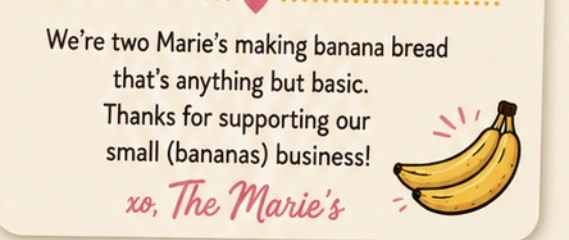

We're the Maries!
Two Maries making banana bread that's anything but basic. Thanks for supporting our small (bananas) business! xo

A family recipe that got out of hand
It started the way all the best things do: in a Staten Island kitchen, with too many overripe bananas and two Maries who refused to waste them. One loaf turned into two. Two turned into "can you make one for my coworker?" And suddenly… we were going bananas.
Today, The Maries Go Bananas is a homemade, small-batch bakery serving our neighbors across Staten Island. We bake every order fresh, test wild new flavors constantly, and laugh a lot along the way.
Baking. Laughing. Going Bananas. Together.
Two Maries, one apron string
Tonimarie
The flavor scientist. If there's a candy bar, a cereal, or a dessert that could become banana bread, Tonimarie is already testing it.
- 🍌 Fave loaf: Strawberries & Nutella
- 🎃 Halloween pick: Twix or Treat
- 💬 Catchphrase: "Okay but what if we added…"
Marie
The heart of the operation. Marie keeps the orders straight, the boxes cute and the stickers perfectly placed (mostly).
- 🍌 Fave loaf: Pistachio Dream
- 🎃 Halloween pick: Midnight Milky Way
- 💬 Catchphrase: "Not your basic banana bread!"
*Founder bios are placeholder copy for the mockup. Swap in the real fun facts!
What we're all about
Not your basic anything
- 01Baked to order.
No shelves, no day-olds. Your loaf is made for you.
- 02Flavors with personality.
Monthly specials, seasonal drops and cause-driven loaves (hi, Breast & Ovarian Cancer Awareness months 💗💙).
- 03Everyone gets a slice.
A full gluten-free & vegan collection, made with the same love.
- 04Community first.
Staten Island born & baked. We deliver to our neighbors and show up for local events.
